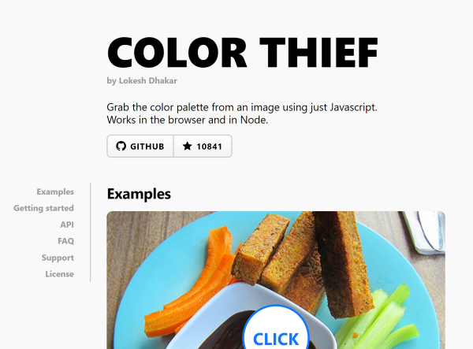
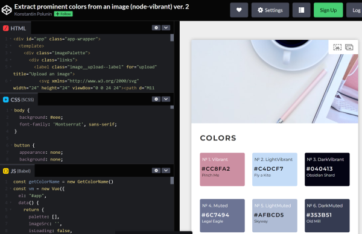
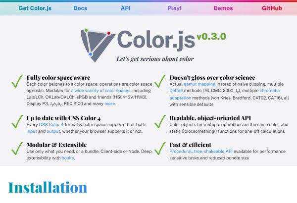
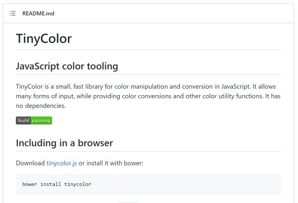
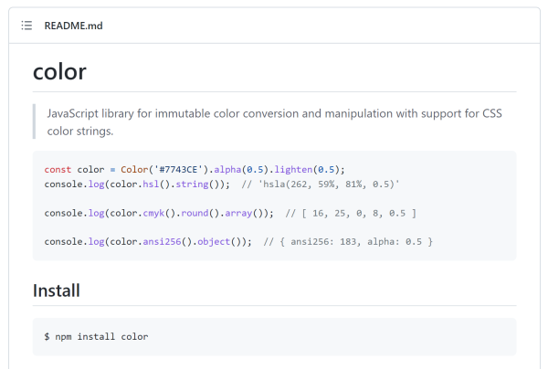
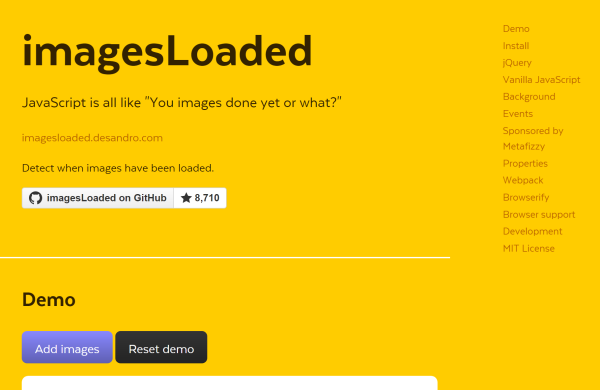
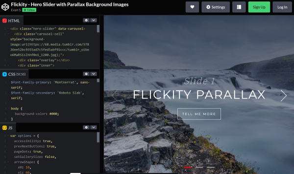

Colors and images are the visual meat on the boil of any web solution. If you don’t convince the visitor’s eye, they will quickly leave and if users have to work with a visually poor solution, they will be too dissatisfied, no matter how well the algorithms work.
Below are a few JavaScript libraries that help to create appealing interfaces.
- Color Thief
- Vibrant Colors
- Color.js
- TinyColor
- Qix color
- Alpha Paintlet
- DOM to Image
- imagesLoaded
- Graphery SVG
- Flickity
Color Thief
by Lokesh Dhakarhttps://lokeshdhakar.com/projects/color-thief/
Lokesh has developed a JS library which extracts a color palette from any given image. Very useful to adjust the colors of a page for example to the hero image. It works in the client as well as in Node.JS applications.
Vibrant Colors
by Corbin Crutchley et alhttps://github.com/Vibrant-Colors/node-vibrant
Corbin Crutchley is one of the maintainer of the library Color Vibrant, which extracts the colors from a given image as Color Thief does, but with many more features. It classifies the colors in the extracted palette for using as common shortcuts, it has a WebWorker for avoiding freezing the UI thread and it has converting methods into several color spaces. Stunning work … see the Pen from Konstantin Polunin.
Color.js - Let's get serious about color
by Lea Verou & Chris Lilleyhttps://colorjs.io/
As Lea Verou says in her blog post on releasing Color.js, there was a lack of color libraries that did the things she (and many others) needed on working with colors. So she teamed up with Chris Lilley, the father of SVG, to create a JS library that covers pretty much everything regarding color coding. I bet Color.js will become a new standard lib for all of us.
TinyColor
by Brian Grinsteadhttps://github.com/bgrins/TinyColor
Brian’s ambitions were certainly not the same as Lea Verou’s, but with TinyColors he has started something, that can be quite helpful on a smaller scale in converting from one color space to another.
Qix color
by Josh Junonhttps://github.com/Qix-/color
Josh Junon, or ‘Qix’ on Github, provides us a lib with only 496 lines and 10.9 KB, for immutable color conversion and manipulation with support for CSS color strings. For in between…
Alpha Paintlet
by Dave Ruperthttps://daverupert.com/2021/10/alpha-paintlet/
The Web API CSS.paintWorklet (see MDN) is an experimental feature in Chromium browsers for extending CSS with JavaScript by writing Worklets. Dave shows us how to do this with his ‘Alpha Paintlet’, which manipulates the alpha channel.
DOM to Image
by Anatolii Saienkohttps://github.com/tsayen/dom-to-image
Ever wanted to store an arbitary DOM node as an image? With Anatolii’s solution a breeze. Just load the library and call domtoimage.toPng(node). It supports PNG, JPEG and SVG.
imagesLoaded
by David DeSandrohttps://imagesloaded.desandro.com/
Sometimes it is important to know when an image was loaded on a website, for example to follow up with further actions. David has a Vanilla script and jQuery solution for this problem and it works with background images too. An important helper … well done.
Graphery SVG
by -unknown-https://www.graphery.org/svg/
Writing an SVG is not really an amusement. If you are more familiar with JS, you can use Vanilla JS with lots of createElement and setAttribut or the wrapper solution from Graphery, which is chainable and very well documented.
Flickity
by Evan Shttps://codepen.io/Skoulix/pen/BRJRPd
Last but not least, a very cool hero image solution from Evan. It uses the parallax effect for sliding hero images in the background. Very cool.



Comments